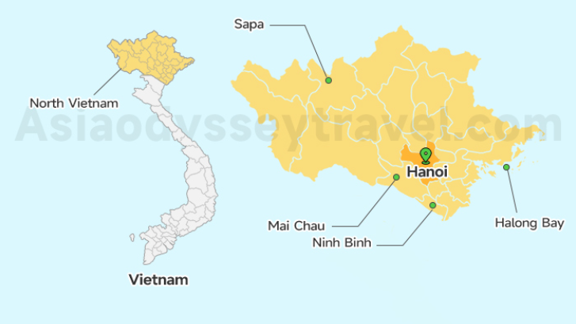
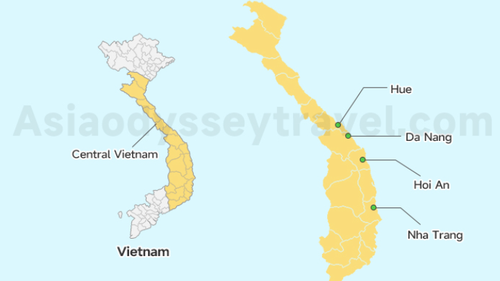
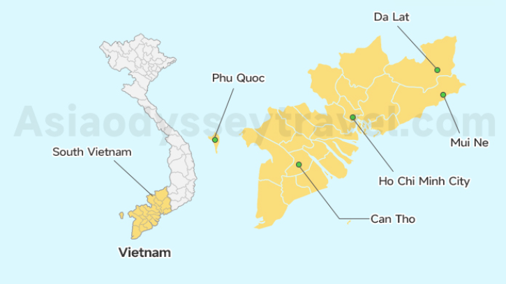

GASTRONOMY TOURISM

Vietnam’s food culture is a vibrant tapestry of flavors, techniques, and regional specialties. Exploring its gastronomy offers a delicious journey into history, local life, and cultural traditions.
1. Regional Cuisine Exploration
|
 |
 |
 |
⭐ Northern Vietnam |
⭐ Central Vietnam |
⭐ Southern Vietnam |
| Characterized by light, subtle flavors and minimal use of chili. Iconic dishes include Pho Hanoi and Bun Cha. Northern cuisine emphasizes balance and elegant presentation. | Known for bold and spicy flavors. Dishes like Mi Quang and Banh Beo reflect the region’s rich culinary traditions influenced by the royal cuisine of Hue. | Sweet and aromatic dishes such as Hu Tieu, Banh Xeo, and Che desserts highlight the diverse and vibrant flavors of Southern Vietnam. |
2. Street Food and Local Markets
Street food is the soul of Vietnamese gastronomy. Iconic street foods include Banh Mi, a crispy French-inspired sandwich, and Goi Cuon (fresh spring rolls), which blend fresh herbs, shrimp, or pork in rice paper.
Markets like Ben Thanh Market (Ho Chi Minh City) or Dong Xuan Market (Hanoi) offer immersive experiences where tourists see local ingredients, smell spices, and taste fresh snacks prepared on the spot. Night markets and riverside stalls provide authentic cultural encounters, allowing visitors to engage with locals and understand the rhythms of daily Vietnamese life.
3. Cooking Classes and Culinary Workshops
Hands-on experiences make gastronomy tourism interactive and educational. Tourists can learn to cook classic dishes like pho, bun cha, or rice paper rolls, guided by local chefs or home cooks.
Classes usually begin with a market visit to select fresh ingredients, teaching visitors about local herbs, spices, sauces, and cooking techniques. Workshops often highlight cultural context, such as how meals are shared communally, what dishes are served during festivals, and the symbolism behind ingredients. This transforms eating into a cultural lesson, connecting flavors to Vietnamese traditions.
4. Vietnamese Beverages and Tea Culture
Drinks are an essential component of culinary tourism. Coffee: Vietnam is famous for its cà phê sữa đá (iced coffee with condensed milk) and egg coffee in Hanoi, which is creamy and rich. Cafes themselves are social hubs where locals gather, giving tourists insight into everyday life.
Tea and Herbal Drinks: Lotus tea, jasmine tea, and herbal infusions are consumed both socially and ceremonially. Many meals are accompanied by tea, which complements flavors and aids digestion.
Local Refreshments: Street vendors sell sugarcane juice, coconut water, and tropical fruit smoothies, often made fresh and served immediately. Beverage tasting allows visitors to experience Vietnamese social customs and the cultural importance of daily drinks.
5. Seafood and Coastal Specialties
Vietnam’s long coastline provides fresh and abundant seafood. Coastal cities like Hoi An, Nha Trang, Da Nang, and Ha Long Bay specialize in shrimp, crab, squid, clams, and fish prepared in local styles.
Signature dishes include Banh Canh Cua (crab noodle soup), grilled seafood platters, and spicy seafood hotpots. Visiting fishing villages gives tourists the chance to see the entire food chain, from local catch to preparation, and understand the livelihoods of coastal communities. Seafood tourism connects gastronomy with culture, geography, and local economy, giving a full sensory and educational experience.